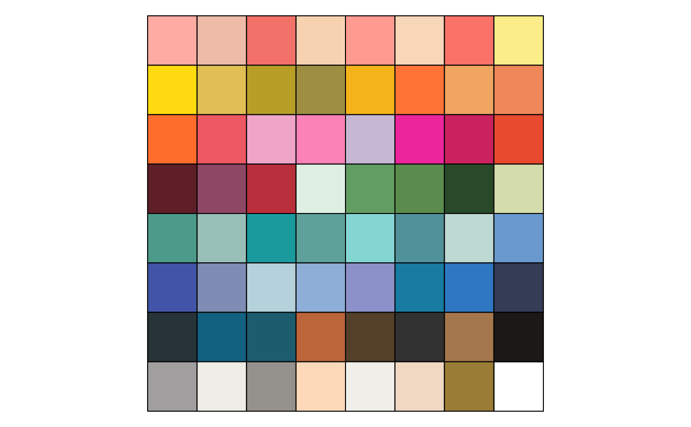

Get a vector of hexadecimal color codes, or, extract a subset of colors as a
using defined color names (available using names(bakeoff_colors())).
Arguments
- ...
Character names of bakeoff colors. If none are specified, returns all. If any are specified, they can be listed by names in quotes (no need to combine with
c()).
Examples
bakeoff_colors()
#> rose peach garancemelon garancepeach desertflower
#> "#fdaba3" "#edbba8" "#f27168" "#f7d2b1" "#ff9a90"
#> tenderpeach livingcoral garanceyellow yellow lemon
#> "#f8d6b8" "#fa7268" "#fbed87" "#fedb11" "#e2bf54"
#> garancegold gold garancemarigold marigold orange
#> "#b79f26" "#9d8e42" "#f4b31a" "#ff7436" "#f0a561"
#> tangerine vibrantorange berry prismpink magenta
#> "#ef8759" "#ff6d2d" "#ee5863" "#efa5c8" "#fb82b7"
#> violet brightpink flush red maroon
#> "#c6b7d5" "#ed259d" "#ca225e" "#e74a2f" "#5f1f29"
#> burgundy cardinal mint garden green
#> "#8e4866" "#b92f3b" "#deeee2" "#629d62" "#5b8c4d"
#> hunter pear pine mason baltic
#> "#284a29" "#d3dcaa" "#4c9a89" "#98c0b8" "#1a9a9d"
#> agategreen riptide marina opal bluegrey
#> "#5da19a" "#84d6d3" "#519199" "#bdd9d4" "#6999cd"
#> cobalt sky starlightblue placidblue bluebell
#> "#4254a7" "#7f8cb4" "#b5d2dc" "#8daed7" "#8d91c9"
#> matisse brightnavy deepblue garanceblue bluesapphire
#> "#187ba2" "#2f77c1" "#343c56" "#283338" "#126180"
#> blue brick almond charcoal cocoa
#> "#1c5c6e" "#bc643a" "#543f29" "#313131" "#a5774c"
#> garanceblack garancegrey garancewhite grey nude
#> "#1a1917" "#a09e9f" "#efede8" "#95918d" "#fdd9b9"
#> white linen tobacco
#> "#f0eee9" "#f0d8c3" "#9a7c37"
bakeoff_colors("riptide")
#> riptide
#> "#84d6d3"
bakeoff_colors("baltic", "yellow")
#> baltic yellow
#> "#1a9a9d" "#fedb11"
names(bakeoff_colors())
#> [1] "rose" "peach" "garancemelon" "garancepeach"
#> [5] "desertflower" "tenderpeach" "livingcoral" "garanceyellow"
#> [9] "yellow" "lemon" "garancegold" "gold"
#> [13] "garancemarigold" "marigold" "orange" "tangerine"
#> [17] "vibrantorange" "berry" "prismpink" "magenta"
#> [21] "violet" "brightpink" "flush" "red"
#> [25] "maroon" "burgundy" "cardinal" "mint"
#> [29] "garden" "green" "hunter" "pear"
#> [33] "pine" "mason" "baltic" "agategreen"
#> [37] "riptide" "marina" "opal" "bluegrey"
#> [41] "cobalt" "sky" "starlightblue" "placidblue"
#> [45] "bluebell" "matisse" "brightnavy" "deepblue"
#> [49] "garanceblue" "bluesapphire" "blue" "brick"
#> [53] "almond" "charcoal" "cocoa" "garanceblack"
#> [57] "garancegrey" "garancewhite" "grey" "nude"
#> [61] "white" "linen" "tobacco"
if (require('scales')) {
show_col(bakeoff_colors(), label = FALSE)
}
#> Loading required package: scales
